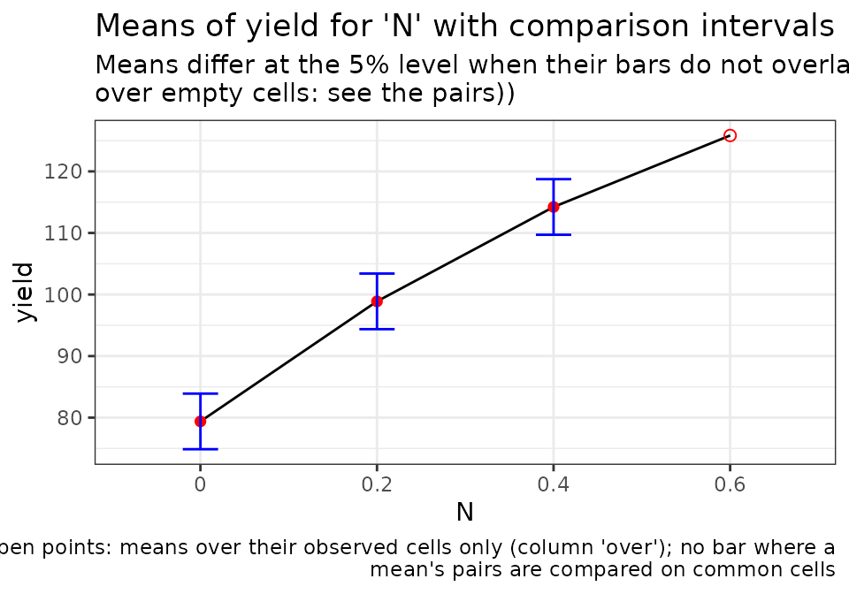

A predicted mean is a linear combination of the model’s coefficients.
When some treatment combinations have no data, or two factors are
confounded, some of these combinations cannot be estimated from the
data: emmeans prints them as nonEst and SAS as
Non-est. This vignette shows what predictmeans does in
these cases and how to get means and comparisons that are estimable.
In short:
- Cell means of combinations with no data are not shown.
- A mean that averages over an empty cell (e.g. the mean of a nitrogen level over the varieties when one variety lacks that level) keeps the rule of predictmeans 1.x: it is the average of the observed cells, with a warning naming it.
-
Its comparisons with other means are made on the
cells both means have (column
overofpairs), not as the difference of two averages over different cells. -
The table says so: column
overofmeansnames the cells such a mean averages. Nothing read off the means can contradict the pair tests: when its pairs are not the differences of the shown means, such a mean has no comparison interval,letterCItakes the letters from the p-values, andautoplot()draws no comparison or half-LSD bar for it (an open point marks every such mean). - A cell is a combination of the factors of one interaction term of the model. Factors that do not interact do not make cells together: a combination of them without data is not an empty cell, because an additive model can estimate it.
- Confounded factors (two factors that do not interact in the model and do not occur in all combinations, so that their effects cannot be told apart): the mean over all their combinations does not exist. The means average over the combinations that exist, with a warning that names the two factors and says how to state the structure in the model.
-
Means that still cannot be estimated are
NA, with a message. Their pairwise differences are given when they can be estimated, and letters among those. - The
meanstable has anestimablecolumn and the number of observations,n.
An empty cell
Suppose the plots of Victory at the highest nitrogen level were lost in the oats split plot:
Oats <- as.data.frame(nlme::Oats)
Oats$N <- factor(Oats$nitro)
Om <- subset(Oats, !(Variety == "Victory" & N == "0.6"))
with(Om, table(Variety, N))
#> N
#> Variety 0 0.2 0.4 0.6
#> Golden Rain 6 6 6 6
#> Marvellous 6 6 6 6
#> Victory 6 6 6 0
fm <- lmer(yield ~ N * Variety + (1 | Block/Variety), data = Om)
#> fixed-effect model matrix is rank deficient so dropping 1 column / coefficientThe model with the interaction has one coefficient fewer (lme4 drops it). The cell means are those of the 11 combinations with data:
pm_cells <- predictmeans(fm, "N:Variety", plot = FALSE)
nrow(pm_cells$means)
#> [1] 11The nitrogen means average over the varieties. For N = 0.6 only two varieties have data, so its mean is their average, and predictmeans warns:
pm_n <- predictmeans(fm, "N", plot = FALSE)
#> Warning: No data for N:Variety 0.6:Victory. The mean of N = 0.6 averages only
#> its observed cells; its pairs use the cells both means have (column 'over').
#> See vignette("missing-cells").
pm_n$means[, c("N", "over", "estimate", "std.error", "n")]
#> N over estimate std.error n
#> 1 0 <NA> 79.38889 6.972348 18
#> 2 0.2 <NA> 98.88889 6.972348 18
#> 3 0.4 <NA> 114.22222 6.972348 18
#> 4 0.6 Variety Golden Rain, Marvellous 125.83333 7.471667 12That mean leaves out Victory, the lowest-yielding variety at the
other nitrogen levels, so it is too high compared with the others;
emmeans calls it non-estimable. The difference 125.8 − 79.4 = 46.4 would
mix the nitrogen effect with the variety effect (Victory is in the mean
of N = 0 but not in that of 0.6). So predictmeans compares N = 0.6 with
each other level on the varieties both have, Golden Rain and Marvellous
(column over): 0.6 − 0 is the average of their two
differences, 42.5. Pairs among the complete levels are the differences
of the means as usual:
pm_n2 <- suppressWarnings(predictmeans(fm, "N", pairwise = TRUE, plot = FALSE))
pm_n2$pairs[, c("level1", "level2", "over", "estimate", "std.error", "p.value")]
#> level1 level2 over estimate std.error
#> 1 0 0.2 <NA> -19.500000 4.469636
#> 2 0 0.4 <NA> -34.833333 4.469636
#> 3 0.2 0.4 <NA> -15.333333 4.469636
#> 4 0 0.6 Variety Golden Rain, Marvellous -42.500000 5.474164
#> 5 0.2 0.6 Variety Golden Rain, Marvellous -22.333333 5.474164
#> 6 0.4 0.6 Variety Golden Rain, Marvellous -9.916667 5.474164
#> p.value
#> 1 8.760703e-05
#> 2 1.494073e-09
#> 3 1.409747e-03
#> 4 1.639811e-09
#> 5 2.085466e-04
#> 6 7.755869e-02Comparing the two averages instead would wrongly call 0.6 and 0.4
different here (p = 0.03 against 0.08 on the common varieties). In
simulations (dev/review-defaults.md in the package sources)
comparing averages over different cells rejected 8–78% of true null
hypotheses when the other factor had an effect; comparing on the common
cells 4–6%. When two means have no cell in common their difference is NA
(over = "none"). pm_joint() tests a term on
the cells common to all its means, and contrastmeans()
compares on the cells the means of each contrast have in common.
anova() does the same for its Type III tests: the
interaction keeps the contrasts that use no empty cell (5 df here, not
6), and the main effects are the pm_joint() tests:
anova(fm)
#> Analysis of Deviance Table (Type III Wald F tests with Kenward-Roger df)
#>
#> Response: yield
#>
#> Empty cells: each term is tested on the cells with data (see ?anova.lmerMod)
#> F Df Df.res Pr(>F)
#> N 22.3912 3 40.064 1.123e-08 ***
#> Variety 1.9414 2 11.843 0.1865
#> N:Variety 0.3295 5 40.064 0.8922
#> ---
#> Signif. codes: 0 '***' 0.001 '**' 0.01 '*' 0.05 '.' 0.1 ' ' 1The mean of N = 0.6 stays in the table, labelled by
over, because it is the honest estimate of its own quantity
(the average over the varieties that have it). A table of means over the
cells common to all levels would not be better: it would change the
means of complete levels whenever another level loses a cell, and with
scattered empty cells the cells common to all can shrink to one or none.
Readings that treat the means as comparable are switched off for it
instead: no comparison interval (its pairs are on common cells), letters
from the p-values with letterCI = TRUE, an open point in
autoplot():
ggplot2::autoplot(pm_n2, interval = "comparison")
Other comparisons that stay within the observed cells are sound too, e.g. nitrogen levels within each variety:
pm_v <- predictmeans(fm, "N:Variety", atvar = "Variety", adj = "tukey", plot = FALSE)
within <- subset(pm_v$pairs, !is.na(by))
head(within[, c("level1", "level2", "by", "estimate", "p.adj")])
#> level1 level2 by estimate p.adj
#> 4 0:Golden Rain 0.2:Golden Rain Golden Rain -18.50000 0.0954457441
#> 8 0:Marvellous 0.2:Marvellous Marvellous -21.83333 0.0358722237
#> 13 0:Victory 0.2:Victory Victory -18.16667 0.0607716581
#> 16 0:Golden Rain 0.4:Golden Rain Golden Rain -34.66667 0.0003454196
#> 19 0.2:Golden Rain 0.4:Golden Rain Golden Rain -16.16667 0.1743690902
#> 23 0:Marvellous 0.4:Marvellous Marvellous -30.50000 0.0017427519or contrasts written with specify_contrast(), which
refuses means that cannot be estimated:
cm <- specify_contrast(Kmatrix(fm, "N:Variety"),
N_effect_GR_and_M = (`0.6:Golden Rain` + `0.6:Marvellous`)/2 - (`0:Golden Rain` + `0:Marvellous`)/2)
contrastmeans(fm, "N:Variety", ctrmatrix = cm)[[1]]
#> Estimate Std. Error t value df Pr(>|t|) lower.CL
#> N_effect_GR_and_M 42.5 5.4742 7.7637 40.0636 0 31.4368
#> upper.CL
#> N_effect_GR_and_M 53.5632
#> attr(,"Note")
#> [1] "The p-value is adjusted by 'none' method, if p-value = 0 means p-value < 0.0001."What counts as a cell
A cell is a combination of the factors of one interaction term. In
y ~ date/farm + date*trt the cells are date × farm and date
× treatment; farm and treatment do not interact. Suppose treatment B has
no data on farm F2 at date d2:
set.seed(11)
dft <- expand.grid(rep = 1:3, trt = factor(c("A", "B")), farm = factor(c("F1", "F2")),
date = factor(c("d1", "d2")))
dft <- dft[!(dft$date == "d2" & dft$farm == "F2" & dft$trt == "B"), ]
dft$y <- 5 + as.integer(dft$farm) * as.integer(dft$date) + 0.5 * (dft$trt == "B") +
rnorm(nrow(dft), 0, 0.3)
fd <- lm(y ~ date/farm + date*trt, data = dft)
predictmeans(fd, "date:trt", plot = FALSE)$means[, c("date", "trt", "estimate", "n")]
#> date trt estimate n
#> 1 d1 A 6.491091 6
#> 2 d1 B 6.835039 6
#> 3 d2 A 7.756290 6
#> 4 d2 B 8.618384 3Every date × farm and every date × treatment cell has data, and the
model says the treatment effect is the same on both farms, so the mean
of B at d2 over both farms can be estimated: no empty cell, no warning.
(An average over farm F1 only would make B look worse than A just
because F1 is the poorer farm.) With a farm × treatment interaction in
the model (date/farm*trt) the same combination is an empty
cell, and the rule of the first section applies.
Confounded factors
In this spray trial the highest spray volume was used only with fine droplets, and the other two volumes only with medium droplets:
set.seed(3)
spray <- data.frame(
droplet = factor(rep(c("medium", "fine"), c(40, 10)), levels = c("medium", "fine")),
vol = factor(c(rep(c("130", "200"), 20), rep("400", 10))),
conc = factor(rep(c("none", "half"), 25)))
spray$y <- 5 + 0.3 * (spray$conc == "half") - 0.4 * (spray$droplet == "fine") +
rnorm(50, sd = 0.2)
with(spray, table(droplet, vol))
#> vol
#> droplet 130 200 400
#> medium 20 20 0
#> fine 0 0 10In a model with droplet and vol as separate
factors, the effect of volume 400 cannot be told apart from that of fine
droplets. A volume mean averaged over both droplet sizes needs both, so
it cannot be estimated. predictmeans() then averages over
the droplet–volume combinations that exist and says so:
fs <- lm(y ~ droplet + conc + vol, data = spray)
pv <- predictmeans(fs, "vol", pairwise = TRUE, plot = FALSE)
#> Warning: 'droplet' and 'vol' are confounded in the data: the means average over
#> the combinations that exist (to say so: droplet/vol in the formula, leave one
#> factor out, or weights = "cells"). No data for droplet:vol fine:130, fine:200,
#> medium:400. The means of vol = 130, 200, 400 average only their observed cells;
#> their pairs use the cells both means have (column 'over'). See
#> vignette("missing-cells").
pv$means[, c("vol", "estimate", "std.error", "n", "group")]
#> vol estimate std.error n group
#> 1 130 5.030309 0.06844537 20 A
#> 2 200 5.246957 0.06844537 20 A
#> 3 400 4.731546 0.05588541 10 BRead these means with the warning in mind: “volume 400” is “volume 400 with fine droplets”, and its difference from volume 130 is also a difference between droplet sizes. The data cannot separate the two.
Three ways to say what you want
The warning names three ways to get the means without relying on the fallback. They are not the same mean:
| Way | What the mean is |
|---|---|
Write the nesting in the formula (droplet/vol) |
equal-weight average over the combinations that exist; the same numbers as the fallback, without the warning about confounding |
| Leave out the factor that adds nothing (when one factor is determined by the other, as a farm by its pastures) | equal-weight average over the levels that remain; the same numbers again |
weights = "cells" |
average over the observed combinations weighted by their numbers of observations; depends on how the data are spread over the other factors |
The first two change the formula, not the fit: the fitted values and the likelihood are the same. Stating the structure in the model is the better record of the design:
fs2 <- lm(y ~ conc + droplet/vol, data = spray)
pn <- predictmeans(fs2, "vol", plot = FALSE)
#> 'vol' is not a term of the model: its factors do not interact there, so these means are the sums of their effects (the differences between the levels of one factor are the same at every level of the others).
cbind(pn$means[, c("vol", "estimate")], fallback = pv$means$estimate,
cells = predictmeans(fs, "vol", weights = "cells", plot = FALSE)$means$estimate)
#> vol estimate fallback cells
#> 1 130 5.030309 5.030309 4.987406
#> 2 200 5.246957 5.246957 5.289860
#> 3 400 4.731546 4.731546 4.731546Confounded within another factor
Confounding is not always nesting over the whole data set. In a grazing trial sampled on several dates, each pasture type is on one farm at a date, but a pasture type can be on another farm at a later date:
set.seed(5)
past <- rbind(expand.grid(date = c("d1", "d2"), pasture = c("P1", "P2", "P3", "P4"),
trt = c("A", "B"), rep = 1:3),
expand.grid(date = "d3", pasture = c("P1", "P4"), trt = c("A", "B"), rep = 1:3))
past$farm <- ifelse(past$date == "d3", ifelse(past$pasture == "P1", "F3", "F4"),
ifelse(past$pasture == "P4", "F2", "F1"))
for (v in c("date", "pasture", "trt", "farm")) past[[v]] <- factor(past[[v]])
past$y <- as.integer(past$date) + as.integer(past$pasture)/2 + 0.5*(past$trt == "B") +
rnorm(nrow(past), 0, 0.3)
fp <- lm(y ~ date/farm + date/(trt + pasture)^2, data = past)
pp <- predictmeans(fp, "date:trt", plot = FALSE)
#> Warning: 'farm' and 'pasture' are confounded in the data: the means average
#> over the combinations that exist (to say so: farm/pasture in the formula, leave
#> one factor out, or weights = "cells"). No data for date:farm d3:F1, d3:F2,
#> d1:F3, d2:F3, d1:F4, d2:F4; date:trt:pasture d3:A:P2, d3:B:P2, d3:A:P3,
#> d3:B:P3; farm:pasture F2:P1, F4:P1, F2:P2, F3:P2, F4:P2, F2:P3, .... The means
#> of date:trt = d1:A, d1:B, d2:A, d2:B, d3:A, d3:B average only their observed
#> cells; their pairs use the cells both means have (column 'over'). See
#> vignette("missing-cells").Farm and pasture do not interact in the model, and at each date the
farm is known from the pasture: the farm terms add nothing to the fit
(their coefficients are aliased). The package finds the pair of factors
by trying: it leaves out the combinations without data of one pair at a
time (first pairs among the factors averaged over) and keeps the first
choice with which every mean can be estimated. The means equal those of
the model without farm:
fp0 <- lm(y ~ date/(trt + pasture)^2, data = past)
p0 <- suppressWarnings(predictmeans(fp0, "date:trt", plot = FALSE))
cbind(pp$means[, c("date", "trt", "estimate")], without_farm = p0$means$estimate)
#> date trt estimate without_farm
#> 1 d1 A 2.301947 2.301947
#> 2 d1 B 2.770451 2.770451
#> 3 d2 A 3.236178 3.236178
#> 4 d2 B 3.792431 3.792431
#> 5 d3 A 4.263867 4.263867
#> 6 d3 B 4.789150 4.789150(The remaining warning for fp0 is about date d3, where
two pasture types were not sampled: an ordinary empty cell.)
Before this rule (decided 2026-11-16) such means were
NA; in predictmeans 1.x they were the same averages,
without a warning that said why.
Checklist
- Look at the
nandestimablecolumns of themeanstable, and at warnings and messages. - Compare means that average over the same cells; use
atvaror contrasts within the observed cells when some are empty. - When the warning says two factors are confounded, the means are over
the combinations that exist. Write the structure into the model
(nesting, or leave out the factor that adds nothing) so that the model
says what the means are;
weights = "cells"gives a different, frequency-weighted mean.